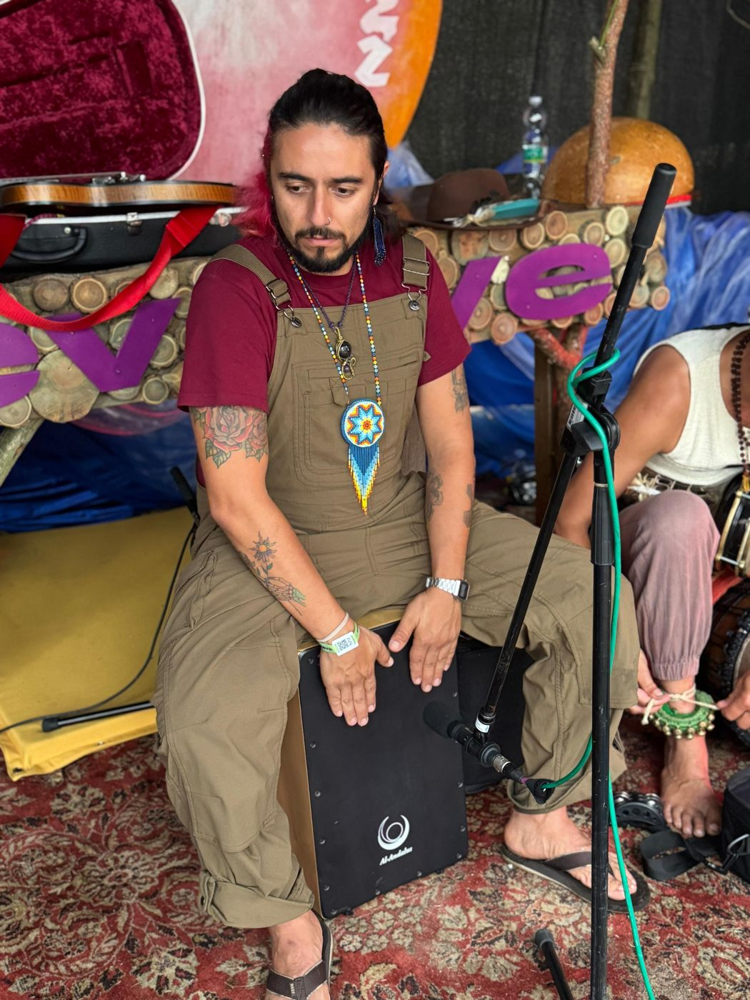
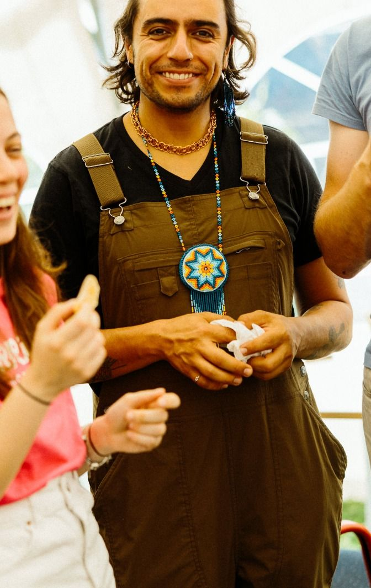
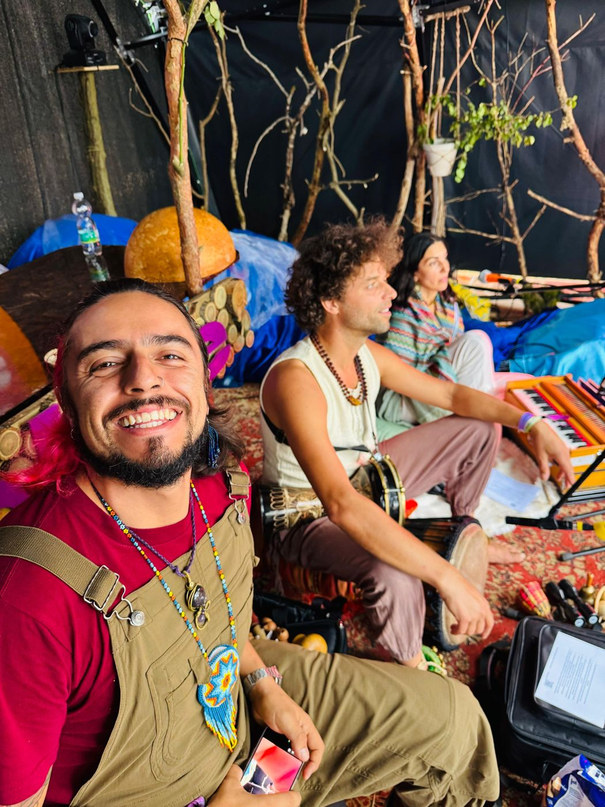
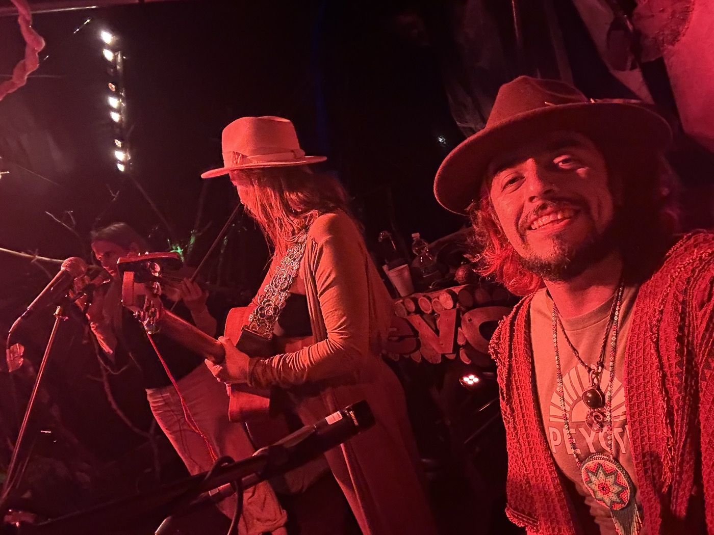
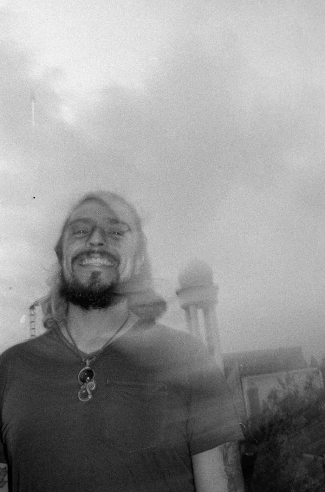
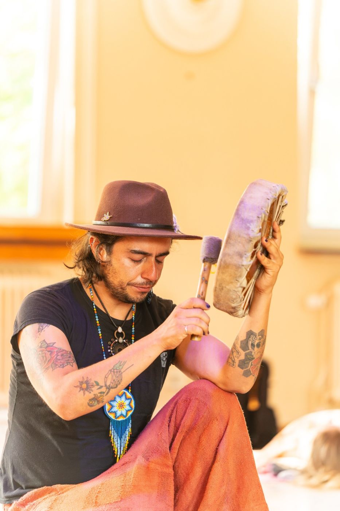

Sound Journey
Two hours. We arrive, share a warm cup, gather and ground. Then you lie down and Ro plays shamanic drums, flutes, bowls and gongs around you. We close together.
2 hoursLying downBerlin
Ro Quetzalcoatl guides sound journeys, movement journeys and ceremonies in Berlin, rooted in the ancestral traditions of Mexico.

Next journey · Sun 08.11. · 15:30 · A Sunday ritual in Berlin
Tea Ceremony, Guided Ecstatic Dance & Sound Experience. All in one afternoon.
Tea in silence, to arrive and let the head go quiet
Guided movement through earth, water, fire, air and ether. No steps to learn
You lie down while Ro plays drums and flutes live around you
Futura House, Main Floor
Berlin
No experience needed. Bring comfortable clothes and a journal if you like. Doors open 15:30, please arrive by 16:00.
Every format carries the wisdom of native and ancestral traditions, through the sound of instruments that belong to the culture. Pick the one that calls you.
Two hours. We arrive, share a warm cup, gather and ground. Then you lie down and Ro plays shamanic drums, flutes, bowls and gongs around you. We close together.
Ro's own movement practice. A dance journey through the five elements and their shapes, with live music. Playful and introspective.
Equinox, solstice, new and full moon. Honouring the change of the season with writing, intentions and fire.
Shoes off, a warm cup, a few words.
Breath and body, so the head can rest.
Live sound, movement or ceremony.
Back together, slowly, before you go.
"We arrive, we gather, we ground, and then we go through the sound journey." Ro
For the body and for the mind. Ro blends what he learned from different traditions into journeys that feel grounded, warm and well made, and gives back to the roots he learns from.
From festival tents to studios in Berlin.




Grounded, clear, no fuss. Ro guides you straight out of your head and into your body.Alexis Papageorgiou
I didn't know what I was coming for. It was something I didn't know I needed.Thomas
So grounded and so well made. Something very unique.Silya
Very grounded. You can tell he knows what he's doing.Simon
Ro curates a ceremony around your moment, with live music and a cup of cacao or tea.
Ro answers personally. Price depends on group size and place.

Ro (Rodrigo Romero) is a musician and movement guide from Guadalajara, Mexico, living in Berlin. For fifteen years he has worked with sound, dance and ancestral traditions, and he carries what he learned from his teachers and his roots into every journey.
"I'm guiding the experience. I'm curating it with the music." Gentle, warm and direct, he keeps the space and lets the instruments speak.
Hotels, studios and festivals already have the people. Ro brings the sound, the movement and everything needed to hold the room.
Sound baths, floating sessions in your pool, and yoga for your guests.
A monthly journey for your community, as a special date in your programme.
One-hour formats: sound journeys and Sacred Geometry in Motion for big and small stages.
Join the Telegram group for dates, four weeks ahead.
Join the Telegram group